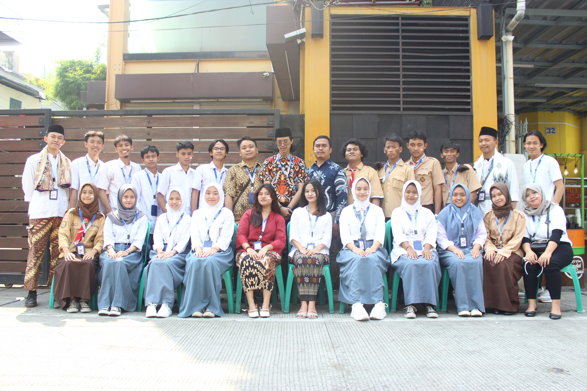

Tentang Kami
Karang Taruna RW 05 Kami adalah sebuah organisasi pemuda yang aktif beroperasi di RW 05, Kelurahan Mangga Besar. Dengan semangat kebersamaan dan gotong royong, kami berupaya untuk menjadi pilar penting dalam membangun komunitas yang harmonis dan progresif di wilayah kami.